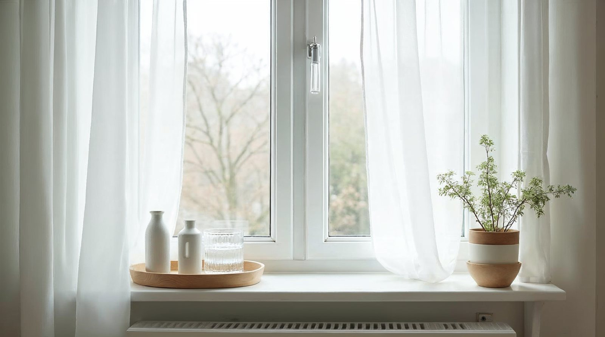
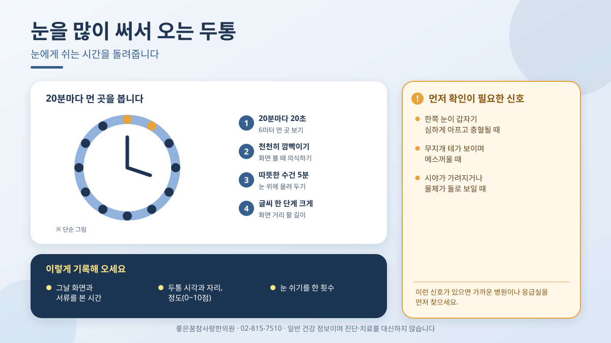

이종호 한의사 감수좋은꿈참사랑한의원 대표원장 (한의사 면허번호 19769)발행 2026-11-26 · 수정 2026-11-26
이 글의 차례
오후 네 시, 모니터 속 숫자가 조금씩 번져 보입니다. 눈을 몇 번 깜빡이고 다시 들여다보지만 초점이 잘 맞지 않습니다. 눈알 뒤가 묵직하고, 눈썹 위가 조여 오더니 관자놀이까지 지끈거립니다. 퇴근길 지하철에서 휴대폰을 켜자 눈이 시려 결국 눈을 감아 버립니다.
진료실에서 이런 두통을 말씀하시는 분은 해마다 늘어나는 것 같습니다. 하루의 대부분을 화면 앞에서 보내고, 쉬는 시간에도 휴대폰을 보는 생활이 익숙해졌기 때문입니다. 눈은 쉬지 못하고, 그 피로가 머리로 번집니다.
눈을 많이 써서 생기는 피로와 그에 따르는 두통, 어깨 결림을 묶어 안정피로라고 부릅니다. 눈이 피곤하다는 단순한 말 같지만, 눈의 초점 근육, 눈물, 목과 어깨의 자세, 잠까지 여러 가지가 함께 얽혀 있는 불편입니다.
이 글에서는 안정피로 두통이 왜 생기는지, 다른 두통과 어떻게 다른지, 안과에서 확인할 것과 생활에서 해 볼 수 있는 것, 그리고 한의원에서 함께 살피는 것을 차근차근 정리했습니다.
안정피로 두통은 어떤 느낌인가요?
눈이 뻐근하고 무거우며, 눈알 뒤가 눌리는 듯하다고 말씀하시는 분이 많습니다. 초점이 잘 맞지 않고 글씨가 번져 보이며, 눈이 시리거나 뻑뻑하고, 빛이 유난히 눈부시게 느껴지기도 합니다.
두통은 대개 이마, 눈썹 위, 관자놀이 쪽에 생깁니다. 머리를 조이는 듯하거나 묵직하게 누르는 느낌이 많고, 눈을 오래 쓸수록 심해지다가 눈을 감고 쉬면 조금 덜해지는 것이 특징입니다. 뒷목과 어깨 결림이 함께 따라오는 경우도 흔합니다.
이 두통은 아침보다는 오후나 저녁에 생기는 경우가 많습니다. 주말처럼 화면을 덜 보는 날에는 두통도 덜했다고 말씀하시는 분이 많아서, 눈을 쓰는 양과 두통의 관계를 짐작하는 실마리가 됩니다.
왜 눈을 많이 쓰면 머리까지 아플까요
가까운 것을 볼 때 우리 눈 속에서는 초점을 맞추는 작은 근육이 계속 힘을 주고, 두 눈을 안쪽으로 모으는 근육도 함께 일합니다. 화면을 몇 시간씩 보면 이 근육들이 쉬지 못한 채 계속 긴장하게 됩니다.
화면에 집중하면 눈을 깜빡이는 횟수가 평소보다 크게 줄어듭니다. 그러면 눈 표면의 눈물이 쉽게 말라 눈이 뻑뻑하고 시리며, 그 불편이 다시 눈 주위 근육을 긴장시킵니다. 실내 난방이나 에어컨 바람도 눈물을 말리는 데 한몫합니다.
눈이 피곤하면 우리는 저도 모르게 얼굴을 찡그리고, 화면 쪽으로 고개를 내밉니다. 이마와 눈썹 주위 근육이 굳고, 머리 무게를 받치는 뒷목과 어깨도 함께 굳습니다. 이렇게 눈에서 시작한 긴장이 이마, 관자놀이, 뒷목으로 번지며 두통이 된다고 이해하시면 됩니다.
시력이 조금 달라졌는데 예전 안경을 그대로 쓰거나, 나이가 들며 가까운 것이 잘 안 보이기 시작했는데 억지로 보려 하면 눈 근육은 더 많이 일해야 합니다. 그래서 안정피로가 갑자기 심해졌다면 시력 변화를 먼저 확인해 보는 것이 좋습니다.
다른 두통과는 무엇이 다른가요
긴장성 두통도 머리를 조이는 느낌이 비슷하지만, 눈보다는 스트레스와 자세, 뒷목의 굳음과 더 가깝습니다. 실제로는 안정피로와 긴장성 두통이 함께 섞여 있는 경우가 많아서, 진료실에서는 눈을 쓰는 양과 두통이 얼마나 함께 움직이는지를 봅니다.
편두통은 머리 한쪽이 욱신거리며 빛과 소리가 싫어지고 속이 메스꺼운 발작이 옵니다. 눈부심이 있다는 점은 비슷하지만, 발작처럼 오고 몇 시간에서 며칠씩 이어지며 눈을 쉬어도 쉽게 가라앉지 않는다는 점이 다릅니다.
축농증이 있으면 이마와 눈 아래가 묵직하게 아프기도 합니다. 콧물, 코막힘, 고개를 숙일 때 심해지는 통증이 함께 있다면 이비인후과에서 코 쪽을 먼저 살펴보시는 것이 좋습니다. 눈이 충혈되고 아프면서 시야가 흐려지는 경우는 눈 자체의 문제를 안과에서 먼저 확인해야 합니다.
안과에서 먼저 확인할 것
안정피로가 이어진다면 한 번쯤 안과에서 시력과 눈 상태를 확인해 보시길 권합니다. 안경 도수가 맞지 않거나, 두 눈의 시력 차이가 크거나, 가까운 것을 볼 때 초점이 잘 맞지 않는 변화가 생겼다면 안경을 바꾸는 것만으로도 눈의 부담이 크게 줄 수 있습니다.
안구건조증이 함께 있다면 안과에서 상태에 맞는 안약이나 관리 방법을 안내받을 수 있습니다. 렌즈를 오래 끼는 분이라면 렌즈가 눈물을 마르게 하고 있지 않은지도 함께 확인해 보세요.
40대 무렵부터는 가까운 것이 조금씩 보기 힘들어지는 노안이 시작되기도 합니다. 휴대폰을 멀리 들고 보게 되었다면 그 신호일 수 있습니다. 이 시기에 억지로 가까운 것을 보려 하면 안정피로 두통이 늘어나기 쉽습니다.
화면 앞 자세와 환경
안정피로는 눈만의 문제가 아니라 눈이 일하는 환경의 문제이기도 합니다. 모니터가 너무 가깝거나 낮으면 고개를 숙이고 눈을 크게 뜨게 됩니다. 화면은 팔을 뻗었을 때 손끝이 닿을 정도의 거리, 화면 윗부분이 눈높이보다 살짝 아래에 오도록 맞추는 것이 좋습니다.
방 안 조명이 너무 어둡고 화면만 밝으면 눈이 밝기 차이에 계속 적응하느라 피로해집니다. 화면 밝기는 주변 밝기와 비슷하게 맞추고, 창문 빛이 화면에 비치지 않도록 책상 방향을 바꿔 보세요.
글씨가 작으면 눈을 찡그리게 됩니다. 화면 글씨 크기를 한 단계 키우는 것만으로도 눈과 이마의 힘이 덜 들어갑니다. 휴대폰도 마찬가지입니다. 작은 글씨를 오래 들여다보는 습관을 줄여 보세요.

계절과 실내 공기에 따라 달라지는 눈의 피로
겨울에는 난방으로 실내 공기가 건조해져 눈물이 쉽게 마릅니다. 히터 바람이 얼굴 쪽으로 오지 않게 방향을 돌리고, 가습기를 쓰거나 젖은 수건을 널어 두는 것만으로도 눈이 덜 뻑뻑할 수 있습니다. 여름 에어컨 바람도 마찬가지입니다.
봄에는 꽃가루와 미세먼지로 눈이 가렵고 충혈되기 쉽습니다. 이럴 때 눈을 자주 비비면 눈 주위가 더 예민해집니다. 외출 뒤에는 손을 씻고 얼굴을 가볍게 헹구는 습관을 들여 보세요.
학생과 수험생의 눈
공부하는 학생과 수험생은 하루 대부분을 책과 화면 앞에서 보냅니다. 인강을 오래 듣고, 작은 글씨의 문제집을 들여다보며, 쉬는 시간에도 휴대폰을 봅니다. 눈이 쉴 틈이 거의 없으니 오후만 되면 머리가 무겁고 집중이 떨어진다고 말씀하십니다.
강의를 들을 때 화면을 너무 가까이 두지 말고, 한 강의가 끝나면 창밖을 1~2분이라도 바라보는 습관을 들여 보세요. 쉬는 시간에 휴대폰 대신 눈을 감고 쉬는 것만으로도 오후의 두통이 덜할 수 있습니다.
아이들은 눈이 불편해도 말로 잘 표현하지 못합니다. 눈을 자주 비비거나 찡그리고, 화면에 얼굴을 바짝 대고 본다면 안과에서 시력을 한 번 확인해 보시길 권합니다.
먼저 이렇게 여쭙니다
처음 오시면 저는 대략 이런 순서로 여쭙니다. 미리 떠올려 오시면 이야기가 훨씬 수월해집니다.
- 하루에 화면과 서류를 보는 시간은 어느 정도인가요?
- 두통은 하루 중 언제, 머리의 어느 자리에 오나요?
- 눈을 감고 쉬면 두통이 덜해지나요?
- 안경이나 렌즈는 언제 맞추셨나요?
- 눈이 뻑뻑하거나 시리고 충혈되는 일이 잦나요?
- 뒷목과 어깨 결림이 함께 있나요?
- 잠은 몇 시간쯤, 어떻게 주무시나요?
이 질문들에 답하다 보면 두통이 눈의 피로에서 시작하는지, 다른 두통이 섞여 있는지가 조금씩 보입니다. 정확히 기억하지 못하셔도 괜찮습니다.
일상에서 먼저 해 볼 수 있는 것
안정피로는 눈에게 쉬는 시간을 돌려주는 것에서 시작합니다. 아래 가운데 한두 가지를 골라 오늘부터 해 보세요.
- 20분마다 20초 동안 6미터쯤 먼 곳을 바라보기
- 화면을 볼 때 일부러 천천히 깜빡이기를 의식하기
- 50분 일하면 5분은 자리에서 일어나 눈과 목 쉬기
- 따뜻한 수건을 눈 위에 5분쯤 올려 두기
- 화면 글씨 크기를 한 단계 키우기
- 잠들기 한 시간 전에는 휴대폰 화면 줄이기
먼 곳 바라보기는 창밖의 건물이나 나무처럼 초점을 멀리 둘 수 있는 곳이면 됩니다. 눈 속 초점 근육이 잠시 힘을 빼고 쉬는 시간이 됩니다. 알람을 맞춰 두면 잊지 않고 이어 가기 쉽습니다.
따뜻한 수건은 눈꺼풀 가장자리의 기름샘을 부드럽게 해 눈물이 덜 마르도록 돕고, 눈 주위 근육의 긴장도 풀어 줍니다. 너무 뜨겁지 않게, 손목 안쪽에 대 보아 따뜻하게 느껴지는 정도면 충분합니다.
뒷목과 어깨도 함께 풀어 주세요. 의자에 앉아 어깨를 천천히 뒤로 돌리고, 턱을 살짝 당겨 뒷목을 길게 늘이는 동작을 하루 몇 번 해 보세요. 눈에서 시작한 긴장이 목과 어깨에 쌓이지 않도록 돕습니다.
한의원에서 함께 살필 수 있는 경우
- 화면을 오래 보는 날마다 눈이 무겁고 이마와 관자놀이가 아픈 경우
- 안과 확인을 마쳤는데도 눈의 피로와 두통이 자주 이어지는 경우
- 눈의 피로와 함께 뒷목과 어깨가 늘 굳어 있는 경우
- 잠이 얕아 아침부터 눈이 무겁고 오후면 두통이 오는 경우
좋은꿈참사랑한의원에 오시면 모든 분의 맥을 먼저 짚고, 눈 주위, 이마, 관자놀이, 뒷목과 어깨 근육을 만져 굳은 자리를 찾습니다. 잠과 소화, 손발의 온도처럼 몸 전체의 흐름도 함께 여쭙니다.
진찰한 내용을 바탕으로 침, 온열 관리, 한약 상담 가운데 지금 상태에 맞는 것을 정합니다. 눈 가까운 자리는 조심스럽게 다루고, 목과 어깨처럼 긴장이 모이는 자리를 함께 살피는 경우가 많습니다. 한약은 드시는 약을 확인한 뒤 신중하게 정합니다.
안과에서 받으신 안약이나 치료는 그대로 이어 가시면 됩니다. 한의원 진료는 안과 진료를 대신하는 것이 아니라, 눈을 둘러싼 몸의 긴장과 생활을 함께 살피는 자리라고 생각해 주세요.
잠과 눈의 피로
잠이 부족하면 아침부터 눈이 무겁고, 같은 양을 봐도 훨씬 빨리 지칩니다. 밤늦게까지 휴대폰을 보다 잠드는 습관은 눈을 쉬지 못하게 할 뿐 아니라 잠도 얕게 만들어, 다음 날의 안정피로를 키우는 고리가 됩니다.
잠들기 한 시간 전에는 방 조명을 조금 낮추고 화면을 내려놓아 보세요. 그 시간에 따뜻한 수건을 눈에 얹고 누워 있으면 눈과 마음이 함께 쉬는 시간이 됩니다. 아침에 일어났을 때 눈이 한결 가볍게 느껴지는 날이 늘어날 수 있습니다.
이렇게 기록해 오시면 상담이 쉬워집니다
안정피로 두통은 눈을 쓰는 양과 두통이 함께 움직이는지를 보는 것이 중요합니다. 2주 정도 간단히 적어 보세요.
- 그날 화면과 서류를 본 시간(대략)
- 두통이 온 시각과 자리, 정도(0~10점)
- 눈의 뻑뻑함, 흐림, 눈부심이 있었는지
- 먼 곳 보기, 눈 쉬기를 한 횟수
- 잠든 시각과 깬 시각
화면 시간과 두통 점수를 나란히 적어 보면 둘이 함께 오르내리는지가 보입니다. 쉬는 시간을 늘린 날 두통이 덜했다면 그것이 가장 좋은 길잡이가 됩니다.
일하는 자리의 사진도 한 장 찍어 오세요. 모니터 높이와 거리, 의자, 조명이 어떻게 놓여 있는지 함께 보면, 눈과 목이 왜 쉽게 지치는지 생각보다 많은 것이 보입니다. 작은 위치 변화 하나가 하루의 피로를 덜어 주기도 합니다.
눈에게 쉬는 시간 돌려주기
우리는 하루 종일 눈에게 일을 시키면서도 쉬는 시간은 잘 챙겨 주지 않습니다. 안정피로 두통은 눈이 보내는 '조금만 쉬게 해 달라'는 신호로 받아들이시면 좋겠습니다. 그 신호를 무시하고 버티기보다, 잠깐씩 눈을 쉬게 해 주는 편이 오히려 하루의 일을 끝까지 해내는 데 도움이 됩니다.
이번 주에는 20분마다 먼 곳 바라보기 하나만 해 보세요. 다음에 오시면 화면 시간과 두통 기록을 함께 펼쳐 놓고, 눈과 목, 잠 가운데 무엇을 먼저 챙길지 같이 정해 보겠습니다.
이런 증상은 먼저 확인이 필요합니다
- 갑자기 한쪽 눈이 심하게 아프거나 시야가 흐려지는 경우(충혈·무지개 테·메스꺼움이 함께 오기도 합니다)
- 갑자기 시야 일부가 가려지거나 둘로 보이는 경우, 말이 어눌해지거나 한쪽 팔다리에 힘이 빠지거나 처음 겪는 극심한 두통이 온 경우
이런 신호가 있으면 한의원보다 가까운 병원이나 응급실을 먼저 찾으세요.
함께 읽으면 좋은 글
- 눈이 뻑뻑하고 모래가 들어간 듯 따갑거나 쉽게 피로한 안구건조증은 어떻게 살피나요?
- 모니터를 오래 보고 나면 눈이 뻑뻑하고 이마와 관자놀이가 아플 때는 어떻게 하나요?
- 인강을 오래 보면 눈이 뻑뻑하고 머리가 무거울 때는 어떻게 하나요?
- 스트레스를 받으면 뒷목이 당기고 머리가 아픈 긴장성 두통은 어떻게 살피나요?
- 거북목과 라운드숄더는 집에서 어떤 스트레칭을 해 볼 수 있나요?

여쭙는 것
- 하루에 화면과 서류를 보는 시간은 어느 정도인가요?
- 두통은 하루 중 언제, 머리의 어느 자리에 오나요?
- 눈을 감고 쉬면 두통이 덜해지나요?
생활에서 해 볼 것
- 20분마다 20초 동안 6미터쯤 먼 곳을 바라보기
- 화면을 볼 때 일부러 천천히 깜빡이기를 의식하기
- 50분 일하면 5분은 자리에서 일어나 눈과 목 쉬기
한의원에서 함께 살필 것
- 화면을 오래 보는 날마다 눈이 무겁고 이마와 관자놀이가 아픈 경우
- 안과 확인을 마쳤는데도 눈의 피로와 두통이 자주 이어지는 경우
- 눈의 피로와 함께 뒷목과 어깨가 늘 굳어 있는 경우
먼저 확인이 필요한 신호
- 갑자기 한쪽 눈이 심하게 아프거나 시야가 흐려지는 경우(충혈·무지개 테·메스꺼움이…
- 갑자기 시야 일부가 가려지거나 둘로 보이는 경우, 말이 어눌해지거나 한쪽 팔다리에…
한눈에 보는 표
| 구분 | 핵심 |
|---|---|
| 여쭙는 것 | 하루에 화면과 서류를 보는 시간은 어느 정도인가요? 두통은 하루 중 언제, 머리의 어느 자리에 오나요? |
| 생활에서 해 볼 것 | 20분마다 20초 동안 6미터쯤 먼 곳을 바라보기 화면을 볼 때 일부러 천천히 깜빡이기를 의식하기 |
| 한의원에서 함께 살필 것 | 화면을 오래 보는 날마다 눈이 무겁고 이마와 관자놀이가 아픈 경우 안과 확인을 마쳤는데도 눈의 피로와 두통이 자주 이어지는 경우 |
| 먼저 확인이 필요한 신호 | 갑자기 한쪽 눈이 심하게 아프거나 시야가 흐려지는 경우(충혈·무지개 테·메스꺼움이 함께 오기도 합니다) 갑자기 시야 일부가 가려지거나 둘로 보이는 경우, 말이 어눌해지거나 한쪽 팔다리에 힘이 빠지거나 처음 겪는 극심한 두통이 온 경우 |
자주 묻는 질문
눈이 피곤해서 오는 두통인지 어떻게 알 수 있나요?
화면을 오래 본 날 오후에 두통이 생기고, 눈을 감고 쉬면 덜해지며, 주말처럼 눈을 덜 쓰는 날에는 두통도 덜하다면 눈의 피로와 이어져 있을 가능성을 생각해 봅니다. 기록을 함께 보면 더 잘 보입니다.
안경을 새로 맞추면 두통이 줄어드나요?
도수가 맞지 않았거나 시력이 달라졌다면 안경을 바꾸는 것이 눈의 부담을 줄이는 데 도움이 될 수 있습니다. 먼저 안과에서 시력과 눈 상태를 확인해 보세요.
블루라이트 차단 안경을 쓰면 괜찮아지나요?
쓰시는 것이 편하다면 써 보셔도 되지만, 그것만으로 안정피로가 해결되기는 어렵습니다. 쉬는 시간, 깜빡임, 화면 거리와 밝기, 자세를 함께 챙기는 것이 더 중요합니다.
인공눈물을 자주 넣어도 되나요?
안구건조증이 함께 있다면 도움이 될 수 있습니다. 어떤 제품을 얼마나 자주 넣을지는 안과나 약사와 상의해 보시고, 넣는 횟수를 기록해 두시면 진료 때 참고가 됩니다.
눈 주위에 침을 맞아도 괜찮나요?
진찰로 상태를 먼저 확인한 뒤 정합니다. 혈액을 묽게 하는 약을 드시면 멍이 들기 쉬우니 미리 알려 주시고, 침이 무서우시면 그 마음도 편하게 말씀해 주세요.
좋은꿈참사랑한의원은 재진 때 지난번 이야기부터 이어서 여쭙니다. 진료시간과 예약은 오시는 길에서 확인하세요.
어디서 상담받을 수 있나요?
좋은꿈참사랑한의원은 서울 동작구 만양로2길 2 신성빌딩 3층·5층(서울 동작구 상도동, 7호선 상도역 3번 출구 근처)에 있습니다. 한의사 3명(이종호 대표원장, 조영기 수석진료원장, 정원영 진료원장)이 진료합니다. 진료시간은 평일 09:30~20:00(점심 13:00~14:00), 토·일·공휴일 09:30~15:00이며, 방문 전 전화로 확인을 권합니다. 예약은 네이버 예약, 카카오톡 상담, 전화 02-815-7510로 받습니다.
이 글은 일반적인 건강 정보이며 개인의 진단이나 치료를 대신하지 않습니다. 증상이 있거나 복용 중인 약이 있다면 진료를 통해 확인하세요. 치료 효과는 개인마다 다를 수 있습니다.
작성 기준: 일반적으로 알려져 있는 건강 정보를 참고해 정리했습니다(대표원장 감수). 증상 기록은 1~2주 동안 하루 1회, 비슷한 시간에 적어 오시면 지난 상태와 비교하기 쉽습니다.